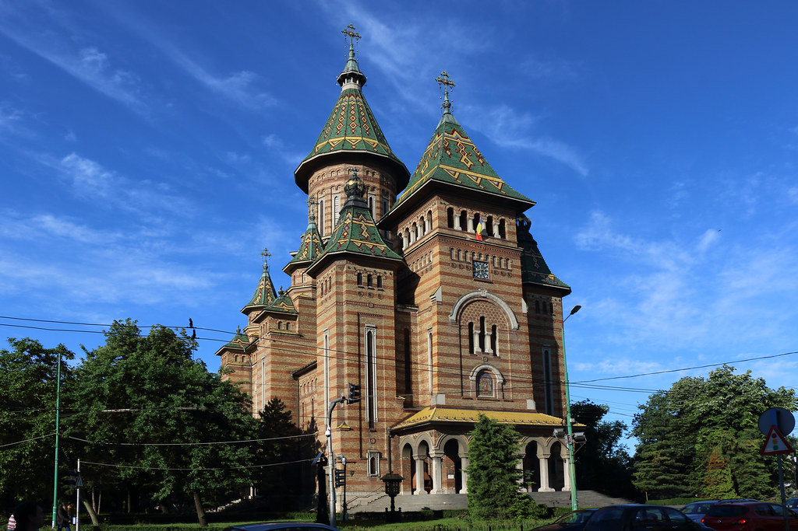

Catedrala Mitropolitană din Timișoara

Catedrala Mitropolitană din Timișoara este cel mai mare edificiu religios din Timișoara, catedrală a Mitropoliei Banatului, cu hramul „Trei Ierarhi”. A fost construită între 1936 și 1941 și este un simbol al orașului. Cu înălțimea de 90,5 m în prezent este a doua biserică din România ca înălțime după Catedrala Mântuirii Neamului, viitoarea catedrală patriarhală din București.
Stilul arhitectonic a fost inspirat de arhitectura moldovenească în general și în special de Biserica Sfântul Gheorghe din Hârlău. Stilul arhitectural al catedralei este atât unic cât și neobișnuit pentru un lăcaș de cult ortodox de asemenea dimensiuni. Acesta îmbină tradiția religioasă română cu arhitectura moldovenească și bizantină. Stilul, cu firide sub streșini, cu bolte înstelate în interior, cu discuri lăcuite într-o multitudine de culori, poate fi găsit în mănăstiri precum Cozia sau Prislop, tipice secolului al XIV-lea.
Catedrala Sfântul Gheorghe din Timișoara sau Domul Romano-Catolic este catedrala Episcopiei Romano-Catolice de Timișoara și unul din monumentele emblematice ale orașului. Edificiul are hramul Sfântului Gheorghe și a fost construit între anii 1736–1774.
Construcția a durat peste 2 decenii, în 2 etape: 1736-1751 și 1755-1774. Monumentul este realizat în stil baroc din cărămidă și are decorații din piatră și stuc. Turlele au o înălțime redusă, determinată de apropierea zidului cetății. Interiorul este bogat și somptuos, remarcându-se cele 9 altare decorate în stil baroc și rococo, sculptate de vienezul Johan Müller, împodobite cu icoane vechi, orga construită în 1908 de Leopold Wegenstein, dar si ușile de stejar ornamentate cu grilaje din nichel pur. Domul Romano-Catolic (Catedrala Romano-Catolică) este considerat a fi cea mai unitară și reprezentativă construcție barocă a Timișoarei și una dintre cele mai valoroase existente în Banat. Proiectul inițial, posibil a fi realizat de Joh. Jacob Schelblauer (consilier al orașului Viena), a fost materializat între anii 1736 și 1774, iar execuția trădează, în ciuda celor patru constructori (Kaspar Dissel, Johann Lechner, Carl Alexander Steinlein, Johann Theodor Kostka), ce s-au succedat la conducerea lucrărilor, o stăpânire perfectă a tehnicilor barocului. La decorația interioară au participat artiști renumiți ca Michael Angelo Unterberger (pictor și director al Academiei artelor frumoase din Viena), la pictarea altarului principal (1754), sculptorul vienez Johann Joseph Rossler, prin statuile Sfântului Carol Boromeus (în stânga altarului), a Sfintei Theresia (în dreapta altarului) și a perechii de heruvimi care domină ornamentația din partea centrală a altarului, precum și Johann Schopf (1772), la decorarea altarelor laterale.
Biserica Millennium, cu hramul Sfânta Maria, este cea mai mare biserică romano-catolică din Timișoara, situată în Piața Romanilor din cartierul Fabric.
Lăcașul a fost construit pentru cinstirea a 1000 de ani de la creștinarea regelui Ștefan I al Ungariei (de aici numele de Millennium).
Construcția, în stil neoromanic, a început în 1896 și a fost terminată în 1901. Proiectul a fost realizat de arhitectul Lajos Ybl. Biserica a fost sfințită în data de 13 octombrie 1901 de episcopul Sándor Dessewffy. Vechea biserică parohială din Fabric a fost donată în anul 1906 către Biserica Română Unită cu Roma, Greco-Catolică.
Biserica are două turnuri cu o înălțime de 65 de metri, cupola centrală având 45 de metri înălțime. Capacitatea lăcașului este de până la 3000 de persoane. Marele clopot are o greutate de 2420 de kilograme. Este dotată cu o orgă fabricată de meșterul Leopold Wegenstein și donată de episcopul Alexander Dessewffy.